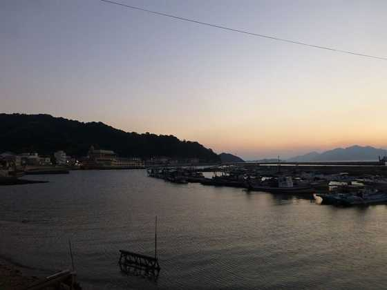
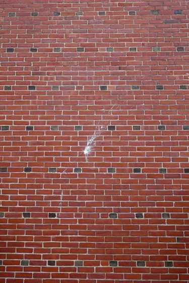
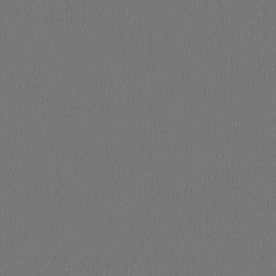
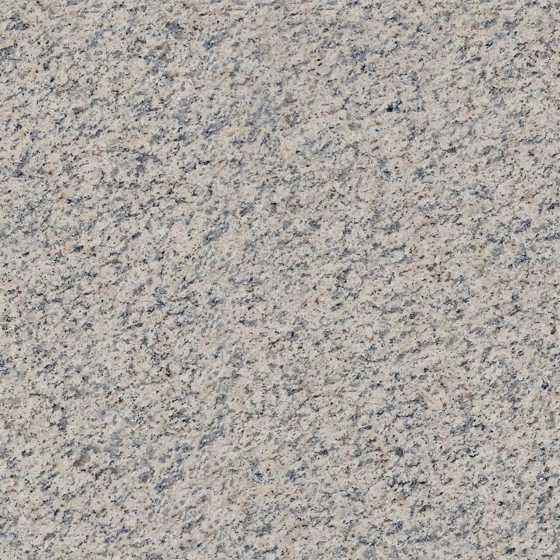
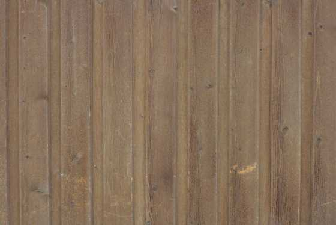
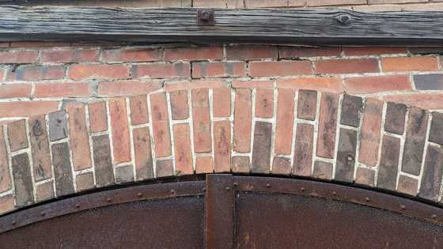
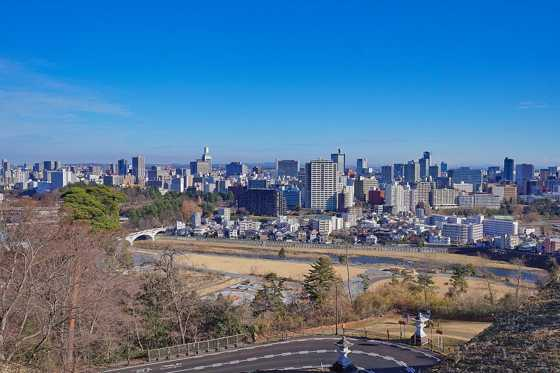
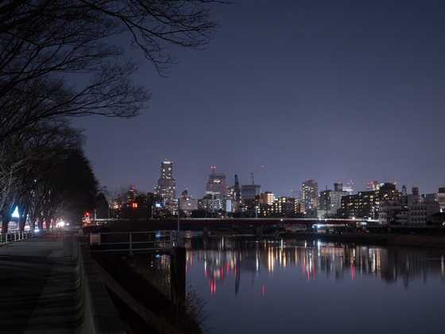
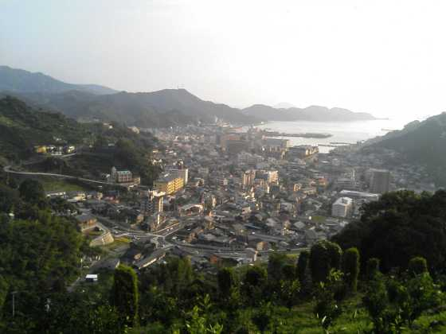

石巻市立町 / AMERICAN CASUAL
日本の仕立てで、
アメリカンカジュアルを着る。
石巻・立町の衣料品店BARREL(バレル)は、「MADE IN JAPAN」にこだわったアメリカンカジュアルのお店です。
お店の由来と想い
「日本製」にこだわる、立町のカジュアル。
立町商店街の紹介ページでは、BARRELは「MADE IN JAPAN」にこだわったクオリティーの高いアメリカンカジュアルショップと紹介されています。
2012年ごろのブログ記事には、震災の被害を受けたのち、お店が「復活」したと紹介されています(記事の詳細は確認できていません)。
情報源: 立町商店街 BARREL / ブログ「BARREL復活!!」 / Instagram
店名「BARREL」は英語で「樽」の意味です。「樽のように使い込むほど味が出る服」といった表現は制作側のイメージであり、お店の公式な由来ではありません。

イメージ
木、れんが、港の風。
掲載写真は、お店の雰囲気を想像していただくためのフリー素材のイメージです。BARRELの店舗や商品の実際の様子ではありません(撮影地は石巻ではありません)。






口コミ(イメージ例)
こんな声が届くお店を目指して。
以下は制作側が作成したイメージ例であり、実在のお客様の声ではありません。
イメージ例
しっかりした作りで、長く着られそうな一着に出会えました。
イメージ例
アメリカンカジュアルの好みを話すと、親身に聞いてくれそうなお店です。
イメージ例
日本製にこだわった服を、立町でゆっくり選べるのがうれしいです。



写真クレジット
写真はすべてフリー素材(Wikimedia Commons)です。縮小・切り抜きの加工をしています。
- sendai-view.jpg:「Cityscape from Sendai Castle 20251221a.jpg」 作者: 掬茶 / CC BY-SA 4.0 / 撮影地: 宮城県仙台市
- sendai-river.jpg:「Hirose River.jpg」 作者: Nryate / CC BY-SA 4.0 / 撮影地: 宮城県仙台市
- dusk-harbor.jpg:「Ninoshima village after sunset - panoramio.jpg」 作者: Max Nossin / CC BY 3.0 / 撮影地: 広島県似島
- harbor-town.jpg:「Yawatahama from above.jpg」 作者: Amake / CC BY-SA 3.0 / 撮影地: 愛媛県八幡浜市
- brick-arch.jpg:「Hakodate dock red brick warehouse arch.jpg」 作者: Shioyama / CC0 1.0 / 撮影地: 北海道函館市
- oak-grain.jpg:「Weatherworn top of wooden table.jpg」 作者: W.carter / CC0 1.0 / 撮影地: スウェーデン
- old-planks.jpg:「Weatherworn planks on top of wooden table.jpg」 作者: W.carter / CC0 1.0 / 撮影地: スウェーデン
- breakwater.jpg:「Utoro Port02s5.jpg」 作者: 663highland / CC BY 2.5 / 撮影地: 北海道斜里町
- stonewall.jpg:「Yuri Seaside Stonewall.jpg」 作者: 掬茶 / CC BY-SA 4.0 / 撮影地: 秋田県由利本荘市
- fishing-port.jpg:「Maeganeku fishing port 8.jpg」 作者: Syced / CC0 1.0 / 撮影地: 沖縄県
- stone-grain.jpg:「Cream spotted speckled clean marble seamless texture.jpg」 作者: Sisters.seamless / CC0 1.0 / 撮影地: 不明
- wood-wall.jpg:「Flickr 5079149086」 作者: mnsc / CC0 1.0 / 撮影地: 不明
- cotton-jersey.jpg:「Cotton jersey spec ior 8k (Rico Cilliers and colormass via Poly Haven).jpg」 作者: Rico Cilliers / colormass / CC0 1.0 / 撮影地: 不明
- brick-wall.jpg:「Brick wall - Arlington, MA - DSC03940.jpg」 作者: Daderot / CC0 1.0 / 撮影地: 不明